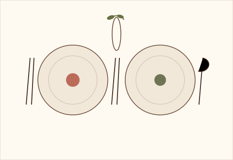

Haz tu reserva
Esta demo guarda las reservas temporalmente en el navegador.

Una mesa preparada para ti.
Los datos permanecen mientras dure la sesión del navegador.
Esta demo guarda las reservas temporalmente en el navegador.

Los datos permanecen mientras dure la sesión del navegador.